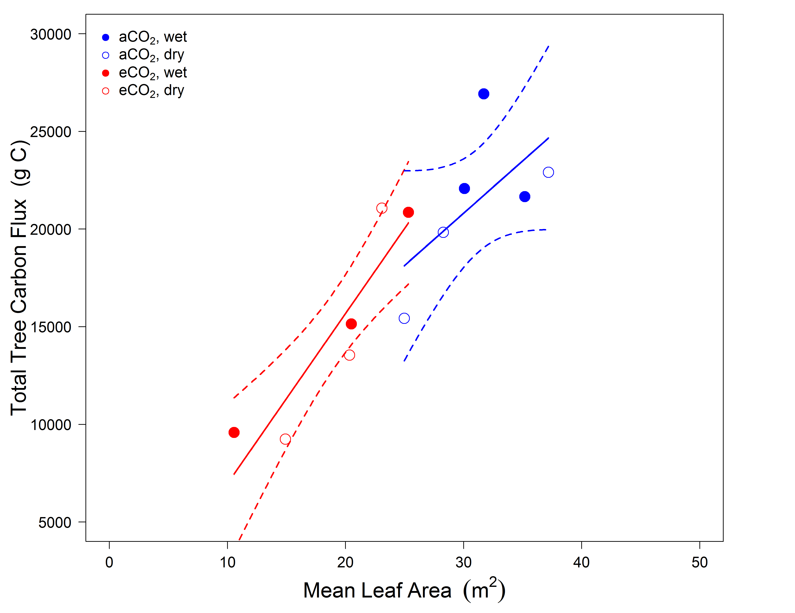
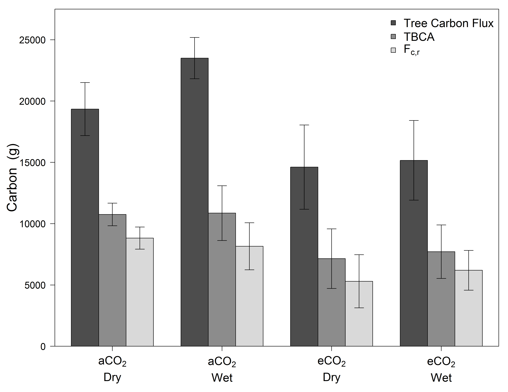

- Plant Ecophysologist
- Ecosystem Ecologist
- www.courtneycampany.com
- twitter @court_campany

Court Campany
Research Fellow, Hawkesbury Institute for the Environment
*leaflet goes here


--- .class #id bg:white

Courtney E. Campany
Mark G. Tjoelker
Susanne von Caemmerer
Remko A. Duursma


+Light gradient determines leaf properties
+N and H2O both distributed to sun leaves
+Maximizes photosynthesis (theoritically)

Trees can't put all leaves in the sun
Photosynthetic capacity ↓ in shade leaves


Are shade leaves optimized for low light or to respond to occasional high light
Beyond just photosynthetic capacity
gs responds slowly
gm anatomicaly constrained
Unfortunately, not enough empirical data available

12 whole tree chambers
Imposed drought in final months
Heaps of gas exchange over 6 months

Measuring two canopy extremes
Leaves measured at current light environment
'Lights On' for shade leaves

Is the canopy optimized to ↑ C gain while ↓ water loss?
What is the role of gm as its costs are less clear?


##Functional properties of Eucalpytus leaves and canopies

Sun leaves utlize higher N while minimizing water loss (✓)
gm proportional to photosynthesis... and also 'ready to go' (✓)
gs and photosynthesis decoupled in shade (✘)
Why are shade leaves wasting water?
Implications for scaling leaf level measurments to the canopy

##background
##drawbacks to these study are real ###integrated soil respirtion measuremnets
##WTC chamber setup for fluxes ##seperate of soil respirtory flux (important)
##WTC 1 design
Eucalpytus saligna or Sydney Blue gum
##allometry of aboveground, done extremely well
##this then allows us to determine TBCA in absolute C terms

##mass partitioning vs C allocation
##Whole Tree Chamber I design
##Once trees are large enough, chamber floors go in and then chamber fluxes can start ##here we generate fluxes over the last 11 months of the experiment
##use allometry to track allocation through time (aboveground)

##leaf are through time
##strong relationship between leaf area and C flux

##use allometry to track allocation through time (aboveground)

##how was mass partitioing and C allocation impacted after ~1yr?

##Does climate change really alter TBCA? 
##Conclusions: Understanding canopy C gain

##Conclusions: Canopy C gain, getting it right

##Conclusions: Tree C allocation, fixed or not?
##Conclusions: Tree C allocation, getting it right